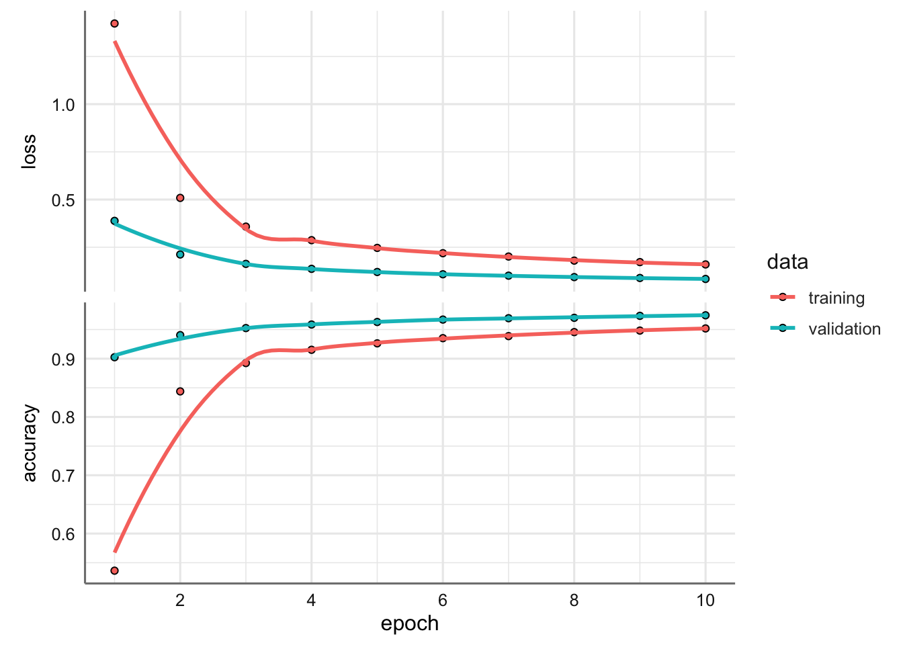
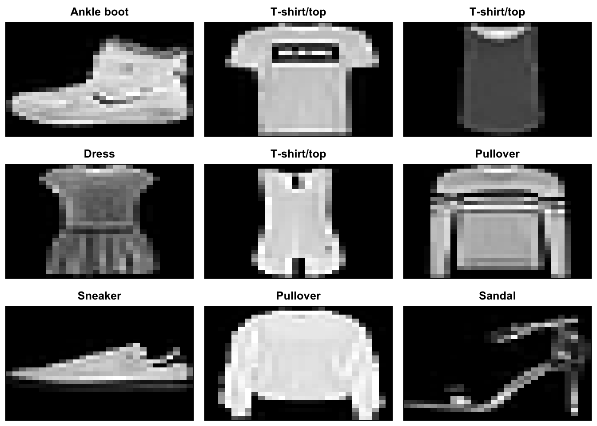

5 Redes convolucionales
Una red neuronal convolucional (Convolutional Neural Networks en inglés, con los acrónimos CNN o ConvNets) es un caso concreto de redes neuronales que fueron ya usadas a finales de los 90 pero que en estos últimos años se han popularizado enormemente al conseguir resultados muy impresionantes en el reconocimiento de imagen, impactando profundamente en el área de visión por computador.
Las redes neuronales convolucionales son muy similares a las redes neuronales presentadas hasta ahora: están formadas por neuronas que tienen parámetros en forma de pesos y sesgos que se pueden aprender. Pero un rasgo diferencial de las redes neuronales convolucionales es que hacen la suposición explícita de que las entradas son imágenes, cosa que nos permite codificar ciertas propiedades en la arquitectura para reconocer elementos concretos en las imágenes.
Para hacernos una idea intuitiva sobre cómo funcionan estas redes neuronales, pensemos en cómo nosotros reconocemos las cosas. Por ejemplo, si vemos una cara, a reconocemos porque tiene orejas, ojos, una nariz, cabello, etc. Entonces, para decidir si algo es una cara, lo hacemos como si tuviéramos unas casillas mentales de verificación de las características que vamos marcando. Algunas veces una cara puede no tener una oreja por estar tapada por el pelo, pero igualmente la clasificamos como cara porque vemos los ojos, la nariz y la boca. En este caso, podemos ver a una red neuronal convolucional como un clasificador equivalente a los presentados anteriormente, que predice una probabilidad de que la imagen de entrada sea cara o no cara.
Pero, en realidad, antes de poder clasificar debemos saber cómo es una oreja o una nariz para saber si están en una imagen; es decir, previamente debemos identificar líneas, bordes, texturas o formas que sean similares a las que contienen las orejas o narices que hemos visto antes. Esto es lo que las capas de una red neuronal convolucional tienen encomendado hacer.
Pero identificar estos elementos no es suficiente para poder decir que algo es una cara. Además, debemos poder identificar cómo las partes de una cara se encuentran colocadas entre sí, tamaños relativos, etc. De lo contrario, la cara no se parecería a lo que estamos acostumbrados. Es decir, una cara está formada por una boca, una nariz y dos ojos, pero la disposición entre ellos es importante, ya que si la disposición no es la adecuada -por ejemplo, si la nariz se encuentra por debajo de la boca- no podemos considerar la imagen como una cara, a pesar de contener todos los elementos que conforman una cara.
En una red convulacional para la detección de imágenes una primera capa convolucional aprende elementos básicos como aristas, y una segunda capa convolucional aprende patrones compuestos de elementos básicos aprendidos en la capa anterior. Y así sucesivamente en cada capa hasta ir aprendiendo patrones muy complejos.
Cargamos las librerías necesarias para el trabajo en este tema:
5.1 ¿Cómo aprende una res convolucional?
Las Redes neuronales Convolucionales aprenden a reconocer una diversidad de objetos dentro de imágenes, pero para ello necesitan “entrenarse” de previo con una cantidad importante de “muestras” de cada objeto, y a su vez, poder generalizarlo. Nuestra red va a poder reconocer por ejemplo un cierto tipo de célula porque ya la ha “visto” anteriormente muchas veces, pero no solo buscará células semejantes sino que podrá inferir imagenes que no conozca pero que relaciona y en donde podrían existir similitudes, y esta es la parte inteligente del conocimiento.
El reconocimiento de imagénes comienza por la pixelización de una imagen:

Podemos hacer los mismo utilizando la descomposición RGB del color:

5.2 Aspecto matemáticos de las convoluciones
Antes de meternos de lleno con las redes, necesitamos comprender bien el concepto de convolución. La convolución es un operador matemático que se define como la integral del producto de dos funciones (\(f\) y \(g\)) donde una de ellas está desplazada una distancia \(t\):
\[(f*g)(t) =\int_{-\infty}^{\infty} f(x)g(t-x)dx\]
Nosotros vamos a adaptar este operador a una versión bidimensional y discreta:
\[(f*g)(i,j) = \sum_{-\infty}^{\infty} \sum_{-\infty}^{\infty} f(x,y)g(i-x,j-y)\]
¿Y para qué nos va a servir? Antes habíamos dicho que nuestro cerebro integraba simples estímulos visuales procedentes de cada fotorreceptor de la retina para producir elementos de información cada vez más compleja y elaborada para permitir luego su reconocimiento. Es como decir que para reconocer una cara nuestro sistema visual registra primero fragmentos de la imagen como pupilas, comisuras de labios, lóbulos de orejas… para luego formar ojos, bocas, orejas… para, finalmente, formar caras. Bueno, pues con la operación de convolución vamos a hacer algo así.
Partamos de una imagen cualquiera, tomémosla en escala de grises para que sea algo más sencilla. Por ahora solo tenemos píxeles. ¿Cuáles serían las características más sencillas que podríamos encontrar? Quizá serían las características que encontraríamos en regiones de tamaño 3×3 de la imagen. ¿Qué cabe en una región tan pequeña? Podríamos encontrar un borde vertical, un borde horizontal, una esquina, un punto… cosas así.
En esta situación consideramos como \(g\) nuestra imagen. Para ejempificar consideramos una imagen en blanco y negro en una cuadrícula 6x6 como la siguiente:

donde identificamos cada cuadrícula con 0 si hay imagen y con 255 las cuadrículas en blanco (intensidad de píxel), lo que nos porporciona la forma que vemos en la imagen anterior.
En primer lugar vamos a tratar de establecer un detector de bordes verticales, es decir queremos identificar las casilla que se encentran en las filas 1 a 5 de la columna 2. Para ello consideramos la función \(f\) que denominmos como kernel con la forma:

y supongamos que queremos calcular la convolución en las coordenadas (2,1) de la imagen (\(g\)) mediante el kernel \(f\). Gráficamente se vería como la superposición del kernel sobre la imagen en esas coordendas y multiplicar celda a celda sus correspondientes valores para, finalmente, sumarlo todo. El resultado obtenido es:
 El resultado que nos devuelve es 765. Es decir, un valor alto, lo que nos permite identificar el borde vertical de la imagen. Si aplicamos el kernel en las posiciones (1,1), (2,1), (3,1), (4,1), y (5,1) podemos identificar todo el borde vertical de la imagen. De froma algo simialr podemos identificar los bordes horizontales con un kernel:
El resultado que nos devuelve es 765. Es decir, un valor alto, lo que nos permite identificar el borde vertical de la imagen. Si aplicamos el kernel en las posiciones (1,1), (2,1), (3,1), (4,1), y (5,1) podemos identificar todo el borde vertical de la imagen. De froma algo simialr podemos identificar los bordes horizontales con un kernel:
array([[1., 1., 1.],
[0., 0., 0.],
[-1., -1., -1.]])y los bordes diagonales con un kernel:
array([[2., 1., 0.],
[1., 0., -1.],
[0., -1., -2.]])Estos kernels se puden generalizar a diferentes tipos de imágenes y bordes. La convolución en su versión bidimensional y discretaen estas situaciones se podría definir como:
\[conv2D(i,j) = \sum_{y=0}^{2} \sum_{x=0}^{2} kernel(x,y)imagen(i+x,j+y)\] ## Componentes básicos de una red neuronal
Ahora que tenemos una visión intuitiva sobre cómo clasifican una imagen las redes neuronales convolucionales, vamos a trabajar con el banco de datos DIGITS para mostrar su funcionamiento. A partir de él, introduciremos las dos capas que definen a las redes neuronales convolucionales, que pueden expresarse como grupos de neuronas especializadas en dos operaciones: convolución y pooling.
5.2.1 Operación de convolución
La diferencia fundamental entre una capa densamente conectada y una capa especializada en la operación de convolución, que llamaremos capa convolucional, es que la capa densa aprende patrones globales en su espacio global de entrada, mientras que la capa convolucional aprende patrones locales dentro de la imagen en pequeñas ventanas de dos dimensiones.
De manera intuitiva, podríamos decir que el propósito principal de una capa convolucional es detectar características o rasgos visuales en las imágenes, como aristas, líneas, gotas de color, etc. Esta es una propiedad muy interesante porque una vez aprendida una característica en un punto concreto de la imagen, la puede reconocer después en cualquier parte de la misma. En cambio, una red neuronal densamente conectada tiene que aprender el patrón nuevamente si este aparece en una nueva localización de la imagen.
Otra característica importante es que las capas convolucionales pueden aprender jerarquías espaciales de patrones. Por ejemplo, una primera capa convolucional puede aprender elementos básicos como aristas, y una segunda capa convolucional puede aprender patrones compuestos de elementos básicos aprendidos en la capa anterior. Y así sucesivamente hasta ir aprendiendo patrones muy complejos. Esto permite que las redes neuronales convolucionales aprendan eficientemente conceptos visuales cada vez más complejos y abstractos.
En general, las capas convoluciones operan sobre tensores 3D, llamados mapas de características (feature maps en inglés), con dos ejes espaciales de altura y anchura (height y width), además de un eje de canal (channels) también llamado profundidad (depth). Para una imagen de color RGB, la dimensión del eje depth es 3, pues la imagen tiene tres canales: rojo, verde y azul (red, green y blue). Para una imagen en blanco y negro, como es el caso de los dígitos MNIST, la dimensión del eje depth es 1 (nivel de gris).
En el caso de MNIST, como entrada en nuestra red neuronal podemos pensar en un espacio de neuronas de dos dimensiones 28 x 28, que transformaremos en un tensor 3D (heíght = 28, width = 28, depth = 1 ), aunque la tercera dimensión en este caso sea de tamaño 1. Una primera capa de neuronas ocultas conectadas a las neuronas de la capa de entrada que hemos comentado realizarán las operaciones convolucionales que acabamos de describir. Pero, como hemos avanzado, no se conectan todas las neuronas de entrada con todas las neuronas de este primer nivel de neuronas ocultas (como en el caso de las redes neuronales densamente conectadas); solo se hace por pequeñas zonas localizadas del espacio de las neuronas de entrada que almacenan los píxeles de la imagen. Visualmente, se podría representar tal como se muestra en la figura siguiente:

En el caso de nuestro ejemplo, cada neurona de la capa oculta será conectada a una pequeña región de 5 x 5 neuronas (es decir, 25 neuronas) de la capa de entrada (de 28 x 28). Intuitivamente, se puede pensar en una ventana del tamaño de 5 x 5 que va recorriendo toda la capa de 28 x 28 que contiene la imagen.
Esta ventana va deslizándose a lo largo de toda la capa de neuronas. Por cada posición de la ventana hay una neurona en la capa oculta que procesa esta información. La ventana empieza en la esquina superior izquierda de la imagen, y esto le da la información necesaria a la primera neurona de la capa oculta.

A continuación, la ventana se desliza una posición hacia la derecha para «conectar» las 5 x 5 neuronas de la capa de entrada incluidas en esta ventana con la segunda neurona de la capa oculta. Y así, sucesivamente, va recorriendo todo el espacio de la capa de entrada, de izquierda a derecha y de arriba abajo.
Analizando un poco el ejemplo concreto que hemos propuesto, observemos que si tenemos una entrada de 28 x 28 píxeles y una ventana de 5 x 5, nos define un espacio de 24 x 24 neuronas en la primera capa oculta, debido a que la ventana solo se puede desplazar 23 neuronas hacia la derecha y 23 hacia abajo antes de chocar con el lado derecho (o inferior) de la imagen de entrada.
Quisiéramos hacer notar al lector o lectora que el supuesto que hemos hecho es que la ventana hace movimientos de avance de 1 píxel en cada paso, tanto en horizontal como en vertical, cuando empieza una nueva fila. Por ello, en cada paso la nueva ventana se solapa con la anterior, excepto en esta línea de píxeles que hemos avanzado. Pero, como veremos en la siguiente sección, en redes neuronales convolucionales se pueden usar diferentes longitudes de pasos de avance (el parámetro llamado stride). En las redes neuronales onvolucionales también se puede aplicar una técnica de relleno de ceros alrededor del margen de la imagen para mejorar el resultado del barrido que se realiza con la ventana que se va deslizando. El parámetro para definir este relleno recibe el nombre de padding, el cual también se presentará con más detalle en la siguiente sección.
En nuestro caso de estudio, y siguiendo el formalismo ya presentado previamente, para «conectar» cada neurona de la capa oculta con las 25 neuronas que le corresponden de la capa de entrada usaremos un valor de sesgo b y una matriz de pesos W de tamaño 5 x 5, que llamaremos filtro (o kernel y filteren inglés). El valor de cada punto de la capa oculta corresponde al producto escalar entre el filtro y el conjunto de 25 neuronas (5 x 5) de la capa de entrada.
Ahora bien, lo particular y muy importante de las redes convolucionales es que se usa el mismo filtro (la misma matriz W de pesos y el mismo sesgo b) para todas las neuronas de la capa oculta: en nuestro caso para las 24 x 24 neuronas (576 neuronas en total) de la primera capa oculta. En este caso concreto, esta compartición reduce de manera drástica el número de parámetros que tendría una red neuronal si no la hiciéramos: pasa de 14400 parámetros que tendrían que ser ajustados (5 x 5 x 24 x 24) a 25 (5 x 5) parámetros más los sesgos b.
Esta matriz de pesos W, compartida con el sesgo b, es similar a los filtros que usamos para retocar imágenes, que en nuestro caso sirven para buscar características locales en pequeños grupos de entradas.
En resumen, una convolución es el tratamiento de una matriz de entrada por otra que llamamos filtro. Pero un filtro definido por una matriz W y un sesgo b solo permiten detectar una característica concreta en una imagen. Por tanto, para poder realizar el reconocimiento de imágenes se propone usar varios filtros a la vez, uno para cada característica que queramos detectar. Por eso una capa convolucional completa en una red neuronal convolucional incluye varios filtros.
Una manera habitual de representar visualmente esta capa convolucional es la que se muestra en la figura siguiente, donde se visualiza que la capa convolucional está compuesta por varios filtros. En nuestro ejemplo proponemos 32 filtros, donde cada filtro se define con una matriz W de pesos compartida de 5 x 5 y un sesgo b. En este ejemplo, la primera capa convolucional recibe un tensor de entrada de tamaño (28, 28, 1) y genera una salida de tamaño (24, 24, 32), un tensor 3D que contiene las 32 salidas de 24 x 24 píxeles resultado de computar los 32 filtros sobre la entrada.

5.2.2 Operación de pooling
Además de las capas convolucionales que acabamos de describir, las redes neuronales convolucionales acompañan a la capa de convolución con unas capas de pooling -que podríamos traducir por agrupación-, que suelen ser aplicadas inmediatamente después de las capas convolucionales. Una primera aproximación para entender para qué sirven estas capas es considerar que las capas de pooling hacen una simplificación de la información recogida por la capa convolucional y crean una versión condensada de la información contenida en esta capa.
En nuestro ejemplo de dígitos MNIST, vamos a escoger una ventana de 2 x 2 sobre la capa convolucional y vamos a sintetizar la información en un punto en la capa de pooling. Visualmente, se puede expresar como en la figura siguiente.

Hay varias maneras de condensar la información, pero una habitual y que usaremos es la conocida como max-pooling. Como valor, se queda con el valor máximo de los que había en la ventana de entrada de 2 x 2 que, en nuestro caso, ha «troceado» en 12 x 12 ventanas la capa de pooling. En este caso, se divide por 4 el tamaño de la salida de la capa de pooling en relación a la capa convolucional donde se aplica el pooling, y queda con tamaño de 12 x 12.
También se puede utilizar average-pooling en lugar de max-pooling, donde cada grupo de puntos de entrada se transforma en el valor promedio del grupo de puntos, en vez de su valor máximo. Pero, en general, el max-pooling tiende a funcionar muy bien.
Es interesante remarcar que con la transformación de poo/ing mantenemos la relación espacial. Para verlo visualmente, cojamos el siguiente ejemplo de una matriz de 12 x 12 donde tenemos representado un 7 (imaginemos que los píxeles por los que pasamos por encima contienen un 1 y el resto O; no lo hemos añadido al dibujo para simplificar su visualización). Esto se representa visualmente en la figura siguiente. Si aplicamos una operación de max-pooling con una ventana de 2 x 2 (lo representamos en la matriz central que divide el espacio en un mosaico con regiones del tamaño de la ventana), obtenemos una matriz de 6 x 6 donde se mantiene una representación que nos recuerda sin ninguna duda al número 7 (lo podemos ver en la figura de la derecha, donde hemos marcado en blanco los ceros y en negro los puntos con valor 1 ).
 Como hemos mencionado anteriormente, la capa convolucional alberga más de un filtro y, por tanto, como aplicamos el max-pooling a cada uno de estos filtros separadamente, la capa de pooling contendrá tantos filtros de pooling como filtros convolucionales había, tal como se representa en la figura siguiente
Como hemos mencionado anteriormente, la capa convolucional alberga más de un filtro y, por tanto, como aplicamos el max-pooling a cada uno de estos filtros separadamente, la capa de pooling contendrá tantos filtros de pooling como filtros convolucionales había, tal como se representa en la figura siguiente

La capa convolucíonal alberga 32 filtros y al aplicar el max-pooling a cada uno de ellos separadamente, la capa de pooling contendrá tantos filtros de pooling como filtros convolucionales.
Dado que teníamos un espacio de 24 x 24 neuronas en cada filtro convolucional, después de hacer el pooling tenemos 12 x 12 neuronas, que corresponden a las 12 x 12 regiones de tamaño 2 x 2 que aparecen al dividir el espacio de neuronas del espacio del filtro de la capa convolucional y este por los 32 filtros convolucionales.
5.3 Implementación de modelos básicos en Keras
Veamos cómo se puede programar este ejemplo de red neuronal convolucional que hemos presentado en Keras. Como hemos comentado, hay varios valores a concretar para parametrizar las capas de convolución y pooling. En nuestro caso, usaremos un modelo simplificado con un stride de 1 en cada dimensión (tamaño del paso con el que desliza la ventana) y un padding de O (en este caso no hay relleno de ceros alrededor de la imagen). Ambos hiperparámetros los presentaremos en la siguiente sección. El pooling que aplicaremos será un max-pooling como el descrito anteriormente con una ventana de 2x2.
En primer lugar cargamos los datos Digits:
# Cargamos datos
mnist <- keras::dataset_mnist()
# División de muestras entrenamiento y validación
x_train <- mnist$train$x
y_train <- mnist$train$y
x_test <- mnist$test$x
y_test <- mnist$test$y
# Reescalamos para tener entradas en el intervalo 0-1
x_train <- x_train / 255
x_test <- x_test / 255
# Etiquetas
etiquetas = 0:9Pasamos a implementar nuestra primera red neuronal convolucional, que consistirá en una convolución seguida de un max-pooling. En nuestro caso, tendremos 32 filtros, usaremos una ventana de 5 x 5 para la capa convolucional y una ventana de 2 x 2 para la capa de pooling. Usaremos, por ejemplo, la función de activación ReLU. En este caso, estamos configurando una red neuronal convolucional para procesar un tensor de entrada de tamaño (28, 28, 1 ), que es el tamaño de las imágenes MNIST (el tercer parámetro es el canal de color que, en nuestro caso, es 1), y lo especificamos mediante el valor del argumento input_ shape= (28, 28, 1) en nuestra primera capa. Veamos cómo es el código de Keras:
# Arquitectura de red
mod = keras_model_sequential() %>%
layer_conv_2d(filters = 32, kernel_size = c(5, 5), activation='relu', input_shape=c(28, 28, 1)) %>%
layer_max_pooling_2d(pool_size = c(2, 2))
summary(mod)Model: "sequential"
________________________________________________________________________________
Layer (type) Output Shape Param #
================================================================================
conv2d (Conv2D) (None, 24, 24, 32) 832
max_pooling2d (MaxPooling2D) (None, 12, 12, 32) 0
================================================================================
Total params: 832 (3.25 KB)
Trainable params: 832 (3.25 KB)
Non-trainable params: 0 (0.00 Byte)
________________________________________________________________________________El número de parámetros de la capa conv2D corresponde a la matriz de pesos W de 5 x 5; y un sesgo b para cada uno de los filtros es 832 parámetros, como se indica en la salida del método summary() como resultado del cálculo de (32x (25+1)). El max-pooling no requiere parámetros, puesto que es una operación matemática que consiste en encontrar el máximo (solo necesitamos especificar los hiperparámetros que definen el tamaño de la ventana).
Consideramos ahora un modelo algo más complejo.En este caso proponemos dos grupos de capas que tendrá 64 filtros con una ventana de 5x5 en la capa convolucional y una de 2x2 en la capa de pooling. En este caso, el número de canales de entrada tomará el valor de las 32 características que hemos obtenido de la capa anterior aunque, como ya hemos visto anteriormente, no hace falta especificarlo más allá de la primera capa porque Keras lo deduce automáticamente:
# Arquitectura de red
mod1 = keras_model_sequential() %>%
layer_conv_2d(filters = 32, kernel_size = c(5, 5), activation='relu', input_shape=c(28, 28, 1)) %>%
layer_max_pooling_2d(pool_size = c(2, 2)) %>%
layer_conv_2d(filters = 64, kernel_size = c(5, 5), activation='relu') %>%
layer_max_pooling_2d(pool_size = c(2, 2))
summary(mod1)Model: "sequential_1"
________________________________________________________________________________
Layer (type) Output Shape Param #
================================================================================
conv2d_2 (Conv2D) (None, 24, 24, 32) 832
max_pooling2d_2 (MaxPooling2D) (None, 12, 12, 32) 0
conv2d_1 (Conv2D) (None, 8, 8, 64) 51264
max_pooling2d_1 (MaxPooling2D) (None, 4, 4, 64) 0
================================================================================
Total params: 52096 (203.50 KB)
Trainable params: 52096 (203.50 KB)
Non-trainable params: 0 (0.00 Byte)
________________________________________________________________________________En este caso, podemos observar que el tamaño de la segunda capa de convolución resultante es de 8 x 8, dado que ahora partimos de una entrada de 12 x 12, una ventana deslizante de 5 x 5 y un stride de 1. El número de parámetros es 51264 porque la segunda capa tendrá 64 filtros, como hemos especificado en el argumento, con 801 parámetros cada uno: 1 corresponde al sesgo y, luego, tenemos la matriz W de 5x5 para cada una de las 32 entradas. Es decir, el valor 51264 se obtiene del cálculo de ((5 x 5 x 32) + 1) x 64.
En este caso la salida de las capas Conv2D y maxPooling2D es un tensor 3D de forma (height, width, número de filtros). Las dimensiones width y height tienden a reducirse a medida que nos adentramos en las capas ocultas de la red neuronal. El número de filtros es controlado a través del primer argumento pasado a la capa Conv2D.
El siguiente paso, ahora que tenemos 64 filtros de 4 x 4, consiste en añadir una capa densamente conectada, que servirá para alimentar una capa final de softmax para hacer la clasificación final.
Recordemos que antes tenemos que ajustar los tensores a la entrada de la capa densa como la softmax, que es un tensor de 1D, mientras que la salida de la anterior es un tensor de 3D; por eso primero hay que «aplanar» el tensor de 3D a uno de 1D, y Keras nos lo facilita con la capa Flatten. Nuestra salida (4,4,64) se debe pasar a un vector de (1024) antes de aplicar el softmax. Veamos cómo sería el código. En este caso, el número de parámetros de la capa softmax es 1Ox1024+1O, con una salida de un vector de 10:
# Arquitectura de red
modelo = keras_model_sequential() %>%
layer_conv_2d(filters = 32, kernel_size = c(5, 5), activation='relu', input_shape=c(28, 28, 1)) %>%
layer_max_pooling_2d(pool_size = c(2, 2)) %>%
layer_conv_2d(filters = 64, kernel_size = c(5, 5), activation='relu') %>%
layer_max_pooling_2d(pool_size = c(2, 2)) %>%
layer_flatten() %>%
layer_dense(units = 10, activation = 'softmax')
summary(modelo)Model: "sequential_2"
________________________________________________________________________________
Layer (type) Output Shape Param #
================================================================================
conv2d_4 (Conv2D) (None, 24, 24, 32) 832
max_pooling2d_4 (MaxPooling2D) (None, 12, 12, 32) 0
conv2d_3 (Conv2D) (None, 8, 8, 64) 51264
max_pooling2d_3 (MaxPooling2D) (None, 4, 4, 64) 0
flatten (Flatten) (None, 1024) 0
dense (Dense) (None, 10) 10250
================================================================================
Total params: 62346 (243.54 KB)
Trainable params: 62346 (243.54 KB)
Non-trainable params: 0 (0.00 Byte)
________________________________________________________________________________Observando este resumen, se aprecia fácilmente que las capas convolucionales requieren memoria para guardar los filtros y memoria para guardar los parámetros aprendidos. Es importante ser consciente de los tamaños de los datos y de los parámetros porque cuando tenemos modelos basados en redes neuronales convolucionales, estos tienen muchas capas, como veremos más adelante, y estos valores pueden dispararse. Una representación más visual de la anterior explicación se muestra en la figura siguiente:

5.3.1 Configuración, entrenamiento y evaluación del modelo
Una vez definido el modelo de la red neuronal estamos ya en disposición de pasar a entrenar el modelo, es decir, ajustar los parámetros de todas las capas de la red neuronal convolucional. A partir de aquí, para saber cuán bien lo hace nuestro modelo, debemos hacer lo mismo que ya hicimos en apartados anteriores.
Entrenamos el modelo:
Epoch 1/5
600/600 - 30s - loss: 0.9284 - accuracy: 0.7572 - 30s/epoch - 50ms/step
Epoch 2/5
600/600 - 30s - loss: 0.2572 - accuracy: 0.9242 - 30s/epoch - 49ms/step
Epoch 3/5
600/600 - 30s - loss: 0.1880 - accuracy: 0.9452 - 30s/epoch - 50ms/step
Epoch 4/5
600/600 - 28s - loss: 0.1504 - accuracy: 0.9562 - 28s/epoch - 47ms/step
Epoch 5/5
600/600 - 28s - loss: 0.1263 - accuracy: 0.9634 - 28s/epoch - 46ms/stepLos resultados finales del entrenamiento los podemos ver con:
Evaluamos el modelo propuesto mediante el porcentaje de clasificación correcta utilizando la muestra de validación.
313/313 - 2s - loss: 0.1068 - accuracy: 0.9680 - 2s/epoch - 5ms/step loss accuracy
0.1067661 0.9680000 Tenemos un porcentaje de clasificación superior al 95%, lo que indica una clasificación muy buena.
Completamos la evaluación del modelo obteniendo la tabla de confusión asociada al modelo, y representamos la probabilidad de clasificación predicha de algunas de las muestras de validación. Para poder obtener la matriz de confusión es necesario obtener las predicciones del modelo para la muestra de validación.
# probabilidades de clasificación de cada muestra en cada especie
prediccion = modelo %>% predict(x_test)313/313 - 2s - 2s/epoch - 5ms/step# predicción del modelo
pr_modelo = factor((prediccion %>% k_argmax())$numpy(), levels = 0:(length(etiquetas)-1))
pr_test = factor(y_test, levels = 0:(length(etiquetas)-1))
# matriz de confusion
cm <- confusion_matrix(y_test, pr_modelo, metrics = list("Weighted Accuracy" = TRUE))
# Métrica global
cm$`Weighted Accuracy`[1] 0.9936142# A tibble: 10 × 2
Class `Balanced Accuracy`
<chr> <dbl>
1 0 0.993
2 1 0.991
3 2 0.979
4 3 0.987
5 4 0.976
6 5 0.982
7 6 0.983
8 7 0.972
9 8 0.980
10 9 0.978La clasifiación ponderada muestra valores muy próximos a 1 indicando muy buena clasificación. Veamos la tabla de cofusión de forma gráfica.
5.3.2 Hiperparámetros de la capa convolucional
Los principales hiperparámetros de las redes neuronales convolucionales son el tamaño de la ventana del filtro, el número de filtros, el tamaño del paso de avance (stride) y el relleno (padding). Pasemos a presentar con más detalle cada uno de ellos.
5.3.2.1 Tamaño de los filtros
El tamaño de la ventana (window_height x window_width) que contiene información de píxeles cercanos espacialmente habitualmente es de 3 x 3 o 5 x 5. El número de filtros que nos indica el número de características que queremos manejar (output_depth) acostumbra a ser de 32 o 64. En las capas Conv2D de Keras estos hiperparámetros son los que pasamos como argumentos en este orden:
layer_conv_2d(filters = output_depth, kernel_size = c(window_height, window_width), ...) 5.3.2.2 Padding
Para explicar el concepto de relleno (padding) usaremos un ejemplo. Supongamos una imagen con 5x5 píxeles. Si elegimos una ventana de 3x3 para realizar la convolución, vemos que el tensor resultante de la operación es de tamaño 3x3. Es decir, se encoge exactamente dos píxeles por cada dimensión, en este caso. En la Figura siguiente se muestra visualmente. Supongamos que la figura de la izquierda es la imagen de 5 x 5. En ella hemos enumerado los píxeles para facilitar el seguimiento de los movimientos de la ventana de 3 x 3 para calcular los elementos del filtro. En el centro vemos cómo la ventana de 3 x 3 se ha desplazado por la imagen, dos veces hacia la derecha y dos posiciones hacia abajo. El resultado de aplicar la operación de convolución nos devuelve el filtro que hemos representado a la izquierda. Cada elemento de este filtro está etiquetado con una letra que lo asocia al contenido de la ventana deslizante con el que se calcula su valor.

Este mismo efecto se puede observar en el ejemplo de red neuronal convolucional que estamos creando en este capítulo. Comenzamos con una imagen de entrada 28x28x1; los filtros resultantes son de 24x24x1 después de la primera capa de convolución. En la segunda capa de convolución, pasamos de un tensor 12x12x1 a uno 8x8x1.
Pero a veces queremos obteenr un tensor de salida de las mismas dimensiones de entrada; podemos usar para ello el hiperparámetro padding en las capas convolucionales. Con padding podemos agregar ceros (zero-padding en inglés) alrededor de las imágenes de entrada antes de hacer desizr la ventana por ella. En nuestro caso de la figura anterior, podemos añadir a la imagen de entrada una columna a la derecha, una columna a la izquierda, una fila arriba y una fila debajo de ceros. Visualmente se puede visualizar enla figura siguiente:

Si ahora deslizamos la ventana de 3x3, vemos que puede desplazarse cuatro veces hacia a la derecha y cuatro hacia abajo, generando las 25 ventanas que generan el filtro de tamaño 5x5 (figura siguiente).

En Keras, este relleno con ceros en la capa Conv2D se configura con el argumento padding, que puede tener dos valores: same, que implica que se añadan tantas filas y columnas de ceros como sea necesario para que la salida tenga la misma dimensión que la entrada, y valid, que implica no hacer padding (que es el valor por defecto de este argumento en Keras).
5.3.2.3 Stride
Otro hiperparámetro que podemos especificar en una capa convolucional es el stride, que nos indica el número de pasos en que se mueve la ventada de los filtros. En el anterior ejemplo el stride era de 1, el valor por defecto.
Valores de stride grandes hacen decrecer el tamaño de la información que pasará a la siguiente capa. En la siguiente podemos ver el mismo ejemplo anterior pero ahora con un valor de stride de 2.
 Como vemos, la imagen de 5x5 se ha convertido en un filtro de tamaño más reducido de 2x2. Pero, en la práctica, los strides son raramente utilizados en convolucionales para reducir los tamaños; para ello se usan las operaciones de pooling que hemos presentado antes. En Keras, el stride en la capa conv2D se configura con el argumento stride que tiene por defecto el valor
Como vemos, la imagen de 5x5 se ha convertido en un filtro de tamaño más reducido de 2x2. Pero, en la práctica, los strides son raramente utilizados en convolucionales para reducir los tamaños; para ello se usan las operaciones de pooling que hemos presentado antes. En Keras, el stride en la capa conv2D se configura con el argumento stride que tiene por defecto el valor strides = ( 1, 1) que indica por separado el avance en las dos dimensiones.
Antes de presenatr un nuevo conjunto de datos vamos a plantear un modelo de red mucho más complejo para el conjnto de datos digits. En concreto, vamos a intercalar varias capas dropout y nueva capa dense antes de la capa de salida.
# Arquitectura de red
modelo = keras_model_sequential() %>%
layer_conv_2d(filters = 32, kernel_size = c(5, 5), activation='relu', input_shape=c(28, 28, 1)) %>%
layer_max_pooling_2d(pool_size = c(2, 2)) %>%
layer_conv_2d(filters = 64, kernel_size = c(5, 5), activation='relu') %>%
layer_max_pooling_2d(pool_size = c(2, 2)) %>%
layer_dropout(0.25) %>%
layer_flatten() %>%
layer_dense(units = 128, activation = 'relu') %>%
layer_dropout(rate = 0.5) %>%
layer_dense(units = 10, activation = 'softmax')
summary(modelo)Model: "sequential_3"
________________________________________________________________________________
Layer (type) Output Shape Param #
================================================================================
conv2d_6 (Conv2D) (None, 24, 24, 32) 832
max_pooling2d_6 (MaxPooling2D) (None, 12, 12, 32) 0
conv2d_5 (Conv2D) (None, 8, 8, 64) 51264
max_pooling2d_5 (MaxPooling2D) (None, 4, 4, 64) 0
dropout_1 (Dropout) (None, 4, 4, 64) 0
flatten_1 (Flatten) (None, 1024) 0
dense_2 (Dense) (None, 128) 131200
dropout (Dropout) (None, 128) 0
dense_1 (Dense) (None, 10) 1290
================================================================================
Total params: 184586 (721.04 KB)
Trainable params: 184586 (721.04 KB)
Non-trainable params: 0 (0.00 Byte)
________________________________________________________________________________El modelo tiene 184586 parámetros que debemos estimar. Configuramos el aprendizaje y entrenamos el modelo con 10 epochs y porcentaje de validación del 20%:
# Proceso de aprendizaje
modelo %>% compile(
loss = 'sparse_categorical_crossentropy',
optimizer = optimizer_sgd(),
metrics = c('accuracy'))
# Entrenamiento
history = modelo %>%
fit(x_train, y_train, batch_size = 100, epochs = 10, validation_split = 0.2) Epoch 1/10
480/480 - 28s - loss: 1.4229 - accuracy: 0.5363 - val_loss: 0.3882 - val_accuracy: 0.9025 - 28s/epoch - 59ms/step
Epoch 2/10
480/480 - 27s - loss: 0.5086 - accuracy: 0.8439 - val_loss: 0.2120 - val_accuracy: 0.9404 - 27s/epoch - 57ms/step
Epoch 3/10
480/480 - 27s - loss: 0.3581 - accuracy: 0.8925 - val_loss: 0.1628 - val_accuracy: 0.9525 - 27s/epoch - 57ms/step
Epoch 4/10
480/480 - 30s - loss: 0.2871 - accuracy: 0.9153 - val_loss: 0.1368 - val_accuracy: 0.9586 - 30s/epoch - 62ms/step
Epoch 5/10
480/480 - 29s - loss: 0.2465 - accuracy: 0.9263 - val_loss: 0.1203 - val_accuracy: 0.9629 - 29s/epoch - 60ms/step
Epoch 6/10
480/480 - 29s - loss: 0.2186 - accuracy: 0.9352 - val_loss: 0.1082 - val_accuracy: 0.9671 - 29s/epoch - 60ms/step
Epoch 7/10
480/480 - 28s - loss: 0.2013 - accuracy: 0.9387 - val_loss: 0.1010 - val_accuracy: 0.9694 - 28s/epoch - 57ms/step
Epoch 8/10
480/480 - 28s - loss: 0.1798 - accuracy: 0.9456 - val_loss: 0.0935 - val_accuracy: 0.9701 - 28s/epoch - 58ms/step
Epoch 9/10
480/480 - 28s - loss: 0.1721 - accuracy: 0.9482 - val_loss: 0.0889 - val_accuracy: 0.9735 - 28s/epoch - 59ms/step
Epoch 10/10
480/480 - 27s - loss: 0.1599 - accuracy: 0.9519 - val_loss: 0.0837 - val_accuracy: 0.9744 - 27s/epoch - 57ms/stepLos resultados finales del entrenamiento los podemos ver con:
Final epoch (plot to see history):
loss: 0.1599
accuracy: 0.9519
val_loss: 0.08372
val_accuracy: 0.9744 
Evaluamos el modelo propuesto mediante el porcentaje de clasificación correcta utilizando la muestra de validación.
313/313 - 2s - loss: 0.0763 - accuracy: 0.9772 - 2s/epoch - 5ms/step loss accuracy
0.07634594 0.97719997 El porcentaje de clasificación sigue siendo muy alto. En este caso no obtenemos la matriz de confusión porque los resultados son muy similares.
5.4 Conjunto de datos Fashion-minst
Llegados a este punto, vamos a presentar el conjunto de datos Fashion-MNIST sobre el que vamos hacer una análisis completo utilizando diferentes modelos de redes convolucionales. Fashion-MNIST es un conjunto de datos de las imágenes de los artículos de Zalando, una tienda de moda online alemana especializada en venta de ropa y zapatos. El conjunto de datos contiene 70000 imágenes en escala de grises en 10 categorías. Las imágenes muestran prendas individuales de ropa en baja resolución (28x28 píxeles). Se usan 60000 imágenes para entrenar la red y 10000 imágenes para evaluar la precisión con la que la red aprende a clasificar las imágenes.
En primer lugar cargamos los datos:
Igual que en el ejemplo anterior, la carga del conjunto de datos devuelve cuatro matrices. Las matrices train son el conjunto de entrenamiento (inputs y outputs). Las matrices test son el conjunto de prueba (inputs y outputs) para evaluar la precisión del modelo. Las imágenes son matrices de 28 x 28 píxeles, con valores que van de O a 255. Las etiquetas son una matriz de enteros, que van de O a 9. Estos corresponden a la clase de ropa que representa la imagen:
Igual que en e ejemplo de digits vamos a escalr los valores de entrada en el rango 0-1:
Para poder representar la información contenida en cada uno de la matrices de entrenamiento definimos una función que nos permite su representación gráfica:
imagen = function(i, xtr, ytr, eti)
{
# Función pra representa la imagen contenida en una matriz de datos 28*28
#
# Valores de entrada
# i : muestra
# xtr: matriz de datos de entrada
# ytr: vector de outputs
# eti: vector de etiquetas de las muestras
#
# Devuelve la imagen correspondiente a xtr[i] con la etiqueta eti[ytr[i]]
img = xtr[i, , ]
img = t(apply(img, 2, rev))
image(1:28, 1:28, img, col = gray((0:255)/255),
xaxt = 'n', yaxt = 'n',
main = paste(eti[ytr[i] + 1]), xlab="",ylab="")
}Veamos el resultado de las primeras 25 muestras de entrenamiento:
par(mfrow=c(3, 3))
par(mar=c(0.5, 0.5, 2, 0.5), xaxs='i', yaxs='i')
for(i in 1:9)
{
imagen(i, x_train, y_train, etiquetas)
}
5.4.1 Modelo inicial
Consideremos como punto de partida usar la misma red en la que hemos clasificado los dígitos MNIST en la sección anterior:
# Arquitectura de red
mod1 = keras_model_sequential() %>%
layer_conv_2d(filters = 32, kernel_size = c(5, 5), activation='relu', input_shape=c(28, 28, 1)) %>%
layer_max_pooling_2d(pool_size = c(2, 2)) %>%
layer_conv_2d(filters = 64, kernel_size = c(5, 5), activation='relu') %>%
layer_max_pooling_2d(pool_size = c(2, 2)) %>%
layer_flatten() %>%
layer_dense(units = 10, activation = 'softmax')
summary(mod1)Model: "sequential_4"
________________________________________________________________________________
Layer (type) Output Shape Param #
================================================================================
conv2d_8 (Conv2D) (None, 24, 24, 32) 832
max_pooling2d_8 (MaxPooling2D) (None, 12, 12, 32) 0
conv2d_7 (Conv2D) (None, 8, 8, 64) 51264
max_pooling2d_7 (MaxPooling2D) (None, 4, 4, 64) 0
flatten_2 (Flatten) (None, 1024) 0
dense_3 (Dense) (None, 10) 10250
================================================================================
Total params: 62346 (243.54 KB)
Trainable params: 62346 (243.54 KB)
Non-trainable params: 0 (0.00 Byte)
________________________________________________________________________________Procedemos con la configuración del proceso de aprendizaje y el entrenamiento del modelo. Debido al coste computacional consideramos un batch pequeño y tan solo 5 epochs.
# Proceso de aprendizaje
mod1 %>% compile(
loss = 'sparse_categorical_crossentropy',
optimizer = optimizer_sgd(),
metrics = c('accuracy'))
# Entrenamiento
hist1 = mod1 %>%
fit(x_train, y_train, batch_size = 50, epochs = 5, validation_split = 0.2) Epoch 1/5
960/960 - 26s - loss: 1.0396 - accuracy: 0.6353 - val_loss: 0.6411 - val_accuracy: 0.7597 - 26s/epoch - 28ms/step
Epoch 2/5
960/960 - 26s - loss: 0.5993 - accuracy: 0.7815 - val_loss: 0.5608 - val_accuracy: 0.7986 - 26s/epoch - 27ms/step
Epoch 3/5
960/960 - 27s - loss: 0.5214 - accuracy: 0.8118 - val_loss: 0.4965 - val_accuracy: 0.8231 - 27s/epoch - 28ms/step
Epoch 4/5
960/960 - 26s - loss: 0.4757 - accuracy: 0.8296 - val_loss: 0.4659 - val_accuracy: 0.8325 - 26s/epoch - 27ms/step
Epoch 5/5
960/960 - 27s - loss: 0.4462 - accuracy: 0.8418 - val_loss: 0.4446 - val_accuracy: 0.8391 - 27s/epoch - 28ms/stepEvaluamos la capacidad de clasificación del modelo propuesto sobre la muestra de validación:
313/313 - 2s - loss: 0.4584 - accuracy: 0.8367 - 2s/epoch - 5ms/step loss accuracy
0.4584489 0.8367000 El porcentaje de clasificación correcta es del 85% par el modelo propuesto. Aunque no es exageradamente bueno debemos tener en cuenta que el modleo es muy simple.
5.4.2 Modelo 2
En este caso duplicamos las neuronas por capa del modelo base y añadimosuna capa densa de 64 neuronas.
# Arquitectura de red
mod2 = keras_model_sequential() %>%
layer_conv_2d(filters = 64, kernel_size = c(5, 5), activation='relu', input_shape=c(28, 28, 1)) %>%
layer_max_pooling_2d(pool_size = c(2, 2)) %>%
layer_conv_2d(filters = 128, kernel_size = c(5, 5), activation='relu') %>%
layer_max_pooling_2d(pool_size = c(2, 2)) %>%
layer_flatten() %>%
layer_dense(units = 64, activation = 'relu') %>%
layer_dense(units = 10, activation = 'softmax')
summary(mod2)Model: "sequential_5"
________________________________________________________________________________
Layer (type) Output Shape Param #
================================================================================
conv2d_10 (Conv2D) (None, 24, 24, 64) 1664
max_pooling2d_10 (MaxPooling2D) (None, 12, 12, 64) 0
conv2d_9 (Conv2D) (None, 8, 8, 128) 204928
max_pooling2d_9 (MaxPooling2D) (None, 4, 4, 128) 0
flatten_3 (Flatten) (None, 2048) 0
dense_5 (Dense) (None, 64) 131136
dense_4 (Dense) (None, 10) 650
================================================================================
Total params: 338378 (1.29 MB)
Trainable params: 338378 (1.29 MB)
Non-trainable params: 0 (0.00 Byte)
________________________________________________________________________________Configuramos y entrenamos el modelo de forma similar al modelo anterior.
# Proceso de aprendizaje
mod2 %>% compile(
loss = 'sparse_categorical_crossentropy',
optimizer = optimizer_sgd(),
metrics = c('accuracy'))
# Entrenamiento
hist2 = mod2 %>%
fit(x_train, y_train, batch_size = 50, epochs = 5, validation_split = 0.2) Epoch 1/5
960/960 - 67s - loss: 1.0222 - accuracy: 0.6330 - val_loss: 0.6513 - val_accuracy: 0.7619 - 67s/epoch - 70ms/step
Epoch 2/5
960/960 - 75s - loss: 0.5954 - accuracy: 0.7793 - val_loss: 0.5548 - val_accuracy: 0.7895 - 75s/epoch - 78ms/step
Epoch 3/5
960/960 - 67s - loss: 0.5156 - accuracy: 0.8109 - val_loss: 0.4796 - val_accuracy: 0.8288 - 67s/epoch - 69ms/step
Epoch 4/5
960/960 - 69s - loss: 0.4668 - accuracy: 0.8325 - val_loss: 0.4630 - val_accuracy: 0.8373 - 69s/epoch - 71ms/step
Epoch 5/5
960/960 - 66s - loss: 0.4340 - accuracy: 0.8447 - val_loss: 0.4474 - val_accuracy: 0.8384 - 66s/epoch - 69ms/stepEvaluamos el modelo comparando con el anterior:
313/313 - 2s - loss: 0.4584 - accuracy: 0.8367 - 2s/epoch - 7ms/step loss accuracy
0.4584489 0.8367000 313/313 - 3s - loss: 0.4574 - accuracy: 0.8374 - 3s/epoch - 11ms/step loss accuracy
0.4574407 0.8374000 A pesar del aumento de neuronas y de la nueva capa densa los resultados del modleo son comparables o incluso perores.
5.4.3 Modelo 3
Ahora consideramos el miso modelo 1 pero cambiando el optimizar por adam:
# Arquitectura de red
mod3 = keras_model_sequential() %>%
layer_conv_2d(filters = 32, kernel_size = c(5, 5), activation='relu', input_shape=c(28, 28, 1)) %>%
layer_max_pooling_2d(pool_size = c(2, 2)) %>%
layer_conv_2d(filters = 64, kernel_size = c(5, 5), activation='relu') %>%
layer_max_pooling_2d(pool_size = c(2, 2)) %>%
layer_flatten() %>%
layer_dense(units = 10, activation = 'softmax')
# Proceso de aprendizaje
mod3 %>% compile(
loss = 'sparse_categorical_crossentropy',
optimizer = optimizer_adam(),
metrics = c('accuracy'))
# Entrenamiento
hist3 = mod3 %>%
fit(x_train, y_train, batch_size = 50, epochs = 5, validation_split = 0.2) Epoch 1/5
960/960 - 29s - loss: 0.5301 - accuracy: 0.8106 - val_loss: 0.3913 - val_accuracy: 0.8618 - 29s/epoch - 30ms/step
Epoch 2/5
960/960 - 26s - loss: 0.3451 - accuracy: 0.8776 - val_loss: 0.3300 - val_accuracy: 0.8837 - 26s/epoch - 27ms/step
Epoch 3/5
960/960 - 28s - loss: 0.3011 - accuracy: 0.8924 - val_loss: 0.3265 - val_accuracy: 0.8843 - 28s/epoch - 29ms/step
Epoch 4/5
960/960 - 26s - loss: 0.2714 - accuracy: 0.9028 - val_loss: 0.3014 - val_accuracy: 0.8928 - 26s/epoch - 27ms/step
Epoch 5/5
960/960 - 26s - loss: 0.2497 - accuracy: 0.9104 - val_loss: 0.2810 - val_accuracy: 0.8984 - 26s/epoch - 27ms/stepComparamos ahora ambos modelos:
313/313 - 2s - loss: 0.4584 - accuracy: 0.8367 - 2s/epoch - 5ms/step loss accuracy
0.4584489 0.8367000 313/313 - 2s - loss: 0.2987 - accuracy: 0.8934 - 2s/epoch - 5ms/step loss accuracy
0.298688 0.893400 El cambio de optimizador mejora el modelo 1 aumentando el porcentaje de clasificación correcta.
5.4.4 Modelo 4
A pesar de la sencillez del modelo propuesto casi alcanzamos el 90% de clasificación correcta lo que es un gran resultado: Para tratar de mejorar dicho modleo y evitar un posible probelam de sobrentrenamiento vamos a introducir dos nuevos tipos de capas en nuestra arquitectura de red:
La capa
BatchNormalization, que usa una técnica 120 introducida en el 2015 cuya idea es normalizar las entradas de la capa de tal manera que tengan una activación de salida media de cero y una desviación estándar de uno. Esto es análogo a cómo se estandarizan las entradas a las redes.La capa
Dropout, que se basa en ignorar ciertos conjuntos de neuronas de la red neuronal durante la fase de entrenamiento de manera aleatoria. Por «ignorar», nos referimos a que estas neuronas no se consideran durante una iteración concreta del proceso de aprendizaje.
Se propone la arquitectura de red que se presenta a continuación:
build_model = function()
{
mod = keras_model_sequential() %>%
layer_conv_2d(filters = 32, kernel_size = c(5, 5), activation='relu', input_shape=c(28, 28, 1)) %>%
layer_batch_normalization() %>%
layer_conv_2d(filters = 64, kernel_size = c(5, 5), activation='relu') %>%
layer_batch_normalization() %>%
layer_dropout(0.25) %>%
layer_conv_2d(filters = 128, kernel_size = c(5, 5), activation='relu') %>%
layer_batch_normalization() %>%
layer_dropout(0.25) %>%
layer_flatten() %>%
layer_dense(units = 128, activation = 'relu') %>%
layer_batch_normalization() %>%
layer_dropout(0.5) %>%
layer_dense(units = 10, activation = 'softmax')
return(mod)
}Cargamos y entrenamos el modelo
mod4= build_model()
# Proceso de aprendizaje
mod4 %>% compile(
loss = 'sparse_categorical_crossentropy',
optimizer = optimizer_adam(),
metrics = c('accuracy'))
# Entrenamiento
hist4 = mod4 %>%
fit(x_train, y_train, batch_size = 50, epochs = 5, validation_split = 0.2) Epoch 1/5
960/960 - 382s - loss: 0.5035 - accuracy: 0.8232 - val_loss: 0.3446 - val_accuracy: 0.8753 - 382s/epoch - 398ms/step
Epoch 2/5
960/960 - 587s - loss: 0.3271 - accuracy: 0.8826 - val_loss: 0.2898 - val_accuracy: 0.8942 - 587s/epoch - 612ms/step
Epoch 3/5
960/960 - 595s - loss: 0.2765 - accuracy: 0.9014 - val_loss: 0.2731 - val_accuracy: 0.9019 - 595s/epoch - 619ms/step
Epoch 4/5
960/960 - 589s - loss: 0.2509 - accuracy: 0.9104 - val_loss: 0.2416 - val_accuracy: 0.9108 - 589s/epoch - 613ms/step
Epoch 5/5
960/960 - 585s - loss: 0.2229 - accuracy: 0.9196 - val_loss: 0.2336 - val_accuracy: 0.9141 - 585s/epoch - 610ms/stepComparamos los resultados con el modelo anterior:
313/313 - 2s - loss: 0.2987 - accuracy: 0.8934 - 2s/epoch - 8ms/step loss accuracy
0.298688 0.893400 313/313 - 21s - loss: 0.2479 - accuracy: 0.9092 - 21s/epoch - 68ms/step loss accuracy
0.2479378 0.9092000 El modelo propuesto mejora los resultados pero el coste computacional es mucho más alto. Esto es un probelmas habitual dentro del análisis de imágenes. Cuando trabajamos con modelos más complejos que nos proporcionan mejores resultados el coste computacional se dispara.
5.4.5 Predicción
Una vez establecido el modelo tan solo nos queda analizar la predicción de las muestars de validación que conseguimos con nuestro mejor modelo.